Liechtensteinhaus — Genuss & Panorama am GipfelLiechtensteinhaus — dining & panorama at 1,340 m
Wann offen — und wie du raufkommstWhen it's open — and how to get up
Aktuelle Betriebszeiten ansehen →See current operating hours →
Genuss auf 1.340 mIndulgence at 1,340 m
Große SonnenterrasseLarge sun terrace
Eis, Kuchen, Sommerspritzer & Aperol mit Panoramablick — im Sommer der Platz an der Sonne.Ice cream, cakes, summer spritzers & Aperol with a panorama — the sunny spot in summer.
Saisonale Menüs & ThemenwochenSeasonal menus & theme weeks
Wechselnde saisonale Menüs & kulinarische Themenwochen das ganze Jahr: Burgerwochen, Italienische Woche und Highlights wie Spargel, Bärlauch, Pilze, Wild & Kürbis.Changing seasonal menus & culinary theme weeks all year: burger weeks, Italian week and highlights like asparagus, wild garlic, mushrooms, game & pumpkin.
Winter: SelbstbedienungWinter: self-service
Im Winter gemütliche SB-Stube — perfekter Einkehrschwung beim Rodeln & Skifahren.In winter a cosy self-service parlour — a perfect stop while tobogganing & skiing.
Terrassen-Events & SonnenuntergangTerrace events & sunsets
Sommer-Abende hoch überm Tal: Live-Musik, Sonnenuntergang und kühle Drinks auf der Terrasse — das Line-up steht im Eventkalender.Summer evenings high above the valley: live music, sunsets and cool drinks on the terrace — the line-up is in the events calendar.
Speisekarte Sommer (PDF) →Summer menu (PDF) → · Burgerreise-Menü (PDF) →Burger world-tour menu (PDF) →
Kulinarische HighlightsCulinary highlights
Von Wiener Schnitzel & Käsespätzle bis Kaiserschmarrn & Apfelstrudel — hausgemacht, mit Bergpanorama serviert.From Wiener schnitzel & cheese spätzle to Kaiserschmarrn & apple strudel — homemade, served with a mountain panorama.
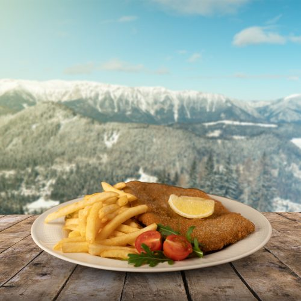
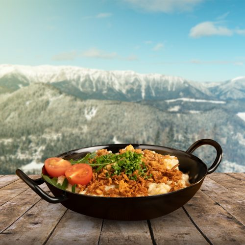
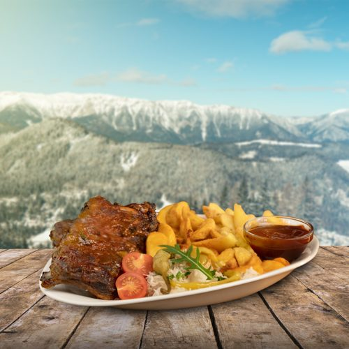
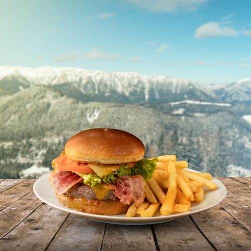
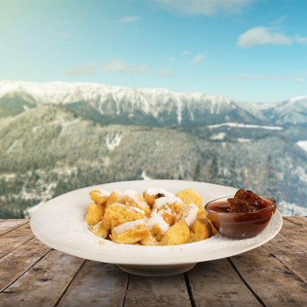
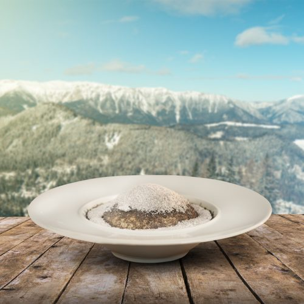
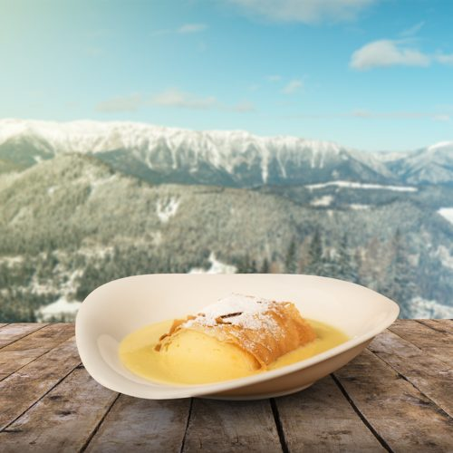
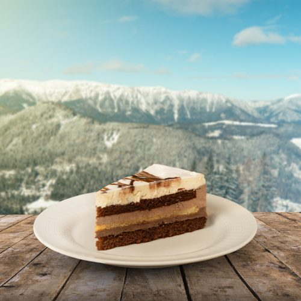
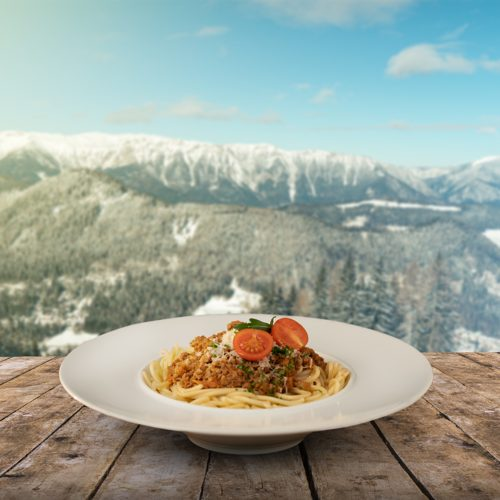
Das Liechtensteinhaus in BildernThe Liechtensteinhaus in pictures
Sommerterrasse, warme Küche, Tiergehege und Wintereinkehr — der Gipfel-Gastgeber durchs ganze Jahr.Summer terrace, hot food, animal enclosure and a winter stop — the summit host all year round.
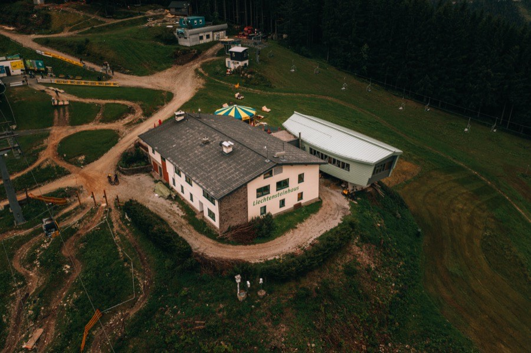
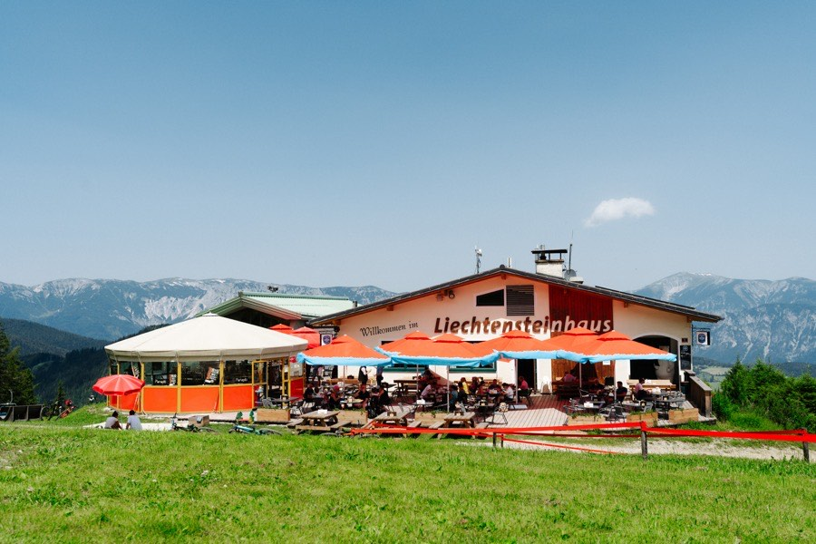
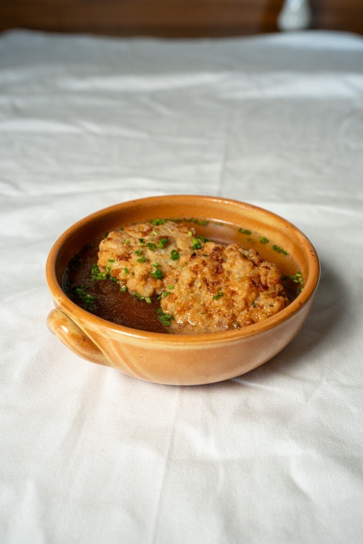
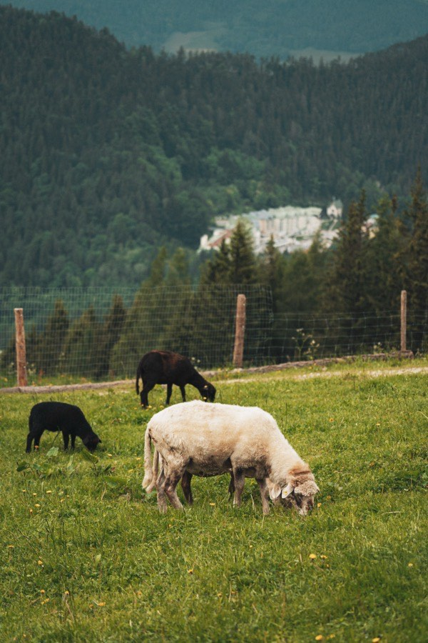
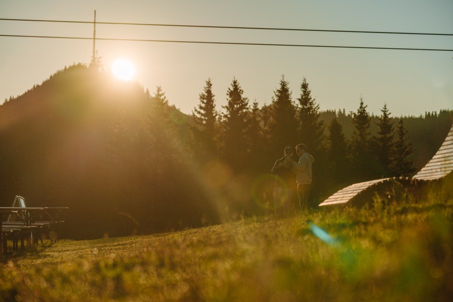
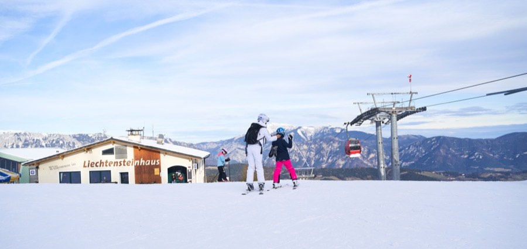
Schulen & GruppenSchools & groups
Eigene Gruppenmenüs, Platz für bis zu 300 Gäste. Schul- & Kindergartenmenü: 10,50 € pro Kind inkl. Getränk — Unverträglichkeiten & Allergien werden bei rechtzeitiger Bekanntgabe berücksichtigt. Ideal für Schulausflüge und Busgruppen.Dedicated group menus, room for up to 300 guests. School & kindergarten menu: €10.50 per child incl. a drink — intolerances & allergies accommodated if announced in advance. Ideal for school trips and coach groups.
Gruppen-AnfrageGroup enquiryTisch reservierenReserve a table
Reserviere deinen Panorama-Tisch — für Mittagessen, Kaffee auf der Terrasse oder den Einkehrschwung im Winter.Reserve your panorama table — for lunch, coffee on the terrace or a winter stop.
ReservierenReserveMehr Genuss in der RegionMore dining in the region
Partner-Adressen rund um den Berg:Partner spots around the mountain: Seewirtshaus am Zauberberg · Zauberbar · Enzianhütte (externe Partnerexternal partners)
Tiergehege direkt unterm RestaurantAnimal enclosure right below the restaurant nur im Sommersummer only
Kaninchen, Hühner und Schafe warten gleich neben der Fotozone — Streicheln ist nicht möglich.Rabbits, chickens and sheep wait right next to the photo spot — petting is not possible.
Après-Hike — jeden Samstag Live-MusikAprès-Hike — live music every Saturday
Après-Ski am ZauberbergAprès-ski on the Zauberberg
Wandern, dann anstoßen: August bis Oktober jeden Samstag Live-Acts an der frischen Luft — Line-up im Eventkalender.Hike, then raise a glass: live acts in the open air every Saturday August–October — line-up in the events calendar.
Nach der letzten Abfahrt: Musik, warme Drinks und Hüttenstimmung.After the last run: music, warm drinks and mountain-hut vibes.
Was Gäste im Liechtensteinhaus sagenWhat guests say at the Liechtensteinhaus
Echte, unbearbeitete Google-Bewertungen — von Gästen aus Österreich, Ungarn, Polen & mehr.Real, unedited Google reviews — from guests in Austria, Hungary, Poland & beyond.
Freundliches Personal, guter Service, leckeres traditionell österreichisches Essen, schöne Aussicht und viele Unterhaltungsmöglichkeiten für Kinder.Sehr schön hier, nette und lustige Bedienung, gutes Essen, preislich in Ordnung, alles gut.Ich war sehr positiv überrascht von diesem Restaurant. Einerseits, dass die Kellner extrem freundlich und kompetent waren und auch, dass das Essen schon arrangiert und sehr gut war! Wir hatten auch Glück…Gemütliche Hütte am Gipfel direkt neben der Seilbahn mit eindrucksvollem Ausblick. Es gibt dort auch eine Panorama-Bar (je nach Öffnungszeiten) und die Möglichkeit mit der Seilbahn wieder hinunter zu fahren…Top-of-ski-lift atmosphere and great hot chocolate. Prices reasonable and view spectacular!This is a great spot with a cozy atmosphere, especially during night skiing when the fire outside adds a magical touch. Inside, the self-service setup and the option to order online at the machine make…This little restaurant on the hilltop was a pleasant surprise. The service was excellent, the spaghetti bolognese I had was delicious. Prices are average, service is fast. There is also shaded seating (I…Delicious! There were a lot of people but thanks to the staff - everything was quick! The food is very good.Nagyon finom! Kitűnő! Csak ajánlani tudom, kedves személyzet és árban is meg fizethető.Fantasztikus hely. Tiszta, az etel finom, a terasz kituno valasztas volt a napsutesben. A palya jo volt, a felvonok mukodtek.A Bécsi szelet kitűnő, korrekt árak. A látvány felülmúlja a képeslapokat.Super. Ciepło, smacznie , szybko podane jedzenie i klimatycznie . PolecamPlatz mit Panorama sichernSecure your panorama seat
Die Anfrage öffnet dein E-Mail-Programm mit allen Angaben — wir bestätigen persönlich.The request opens your e-mail app with all details — we confirm personally.
Häufige FragenFrequent questions
Alle FAQs für Sommer & Winter →All FAQs for summer & winter →
 Hirschi
Hirschi